This vignette demonstrates the QC plots generated by cellhashR and loading of data directly from 10X Genomics files.
library(cellhashR)
knitr::opts_chunk$set(message=FALSE, warning=FALSE, echo=TRUE, error=TRUE)Data is loaded for analysis from the umi_count directory of 10X Genomics data using the cellhashR command ProcessCountMatrix. This function loads raw counts and performs basic filtering and QC. The input count matrix was generated to include all possible barcodes. The figures demonstrate that only MS-11 and MS-12 barcodes are present.
if (!is.null(citeSeqCountDir)) {
saturation <- PlotLibrarySaturation(citeSeqCountDir, metricsFile = metricsFile)
}
rawCountData = "../tests/testdata/438-21-GEX/umi_count"
barcodeData <- ProcessCountMatrix(rawCountData = rawCountData, minCountPerCell = minCountPerCell, barcodeWhitelist = barcodeWhitelist, saveOriginalCellBarcodeFile = saveOriginalCellBarcodeFile, metricsFile = metricsFile)
if (nrow(barcodeData) == 0) {
stop('No passing barcodes')
}
if (ncol(barcodeData) == 0) {
stop('No passing cells')
}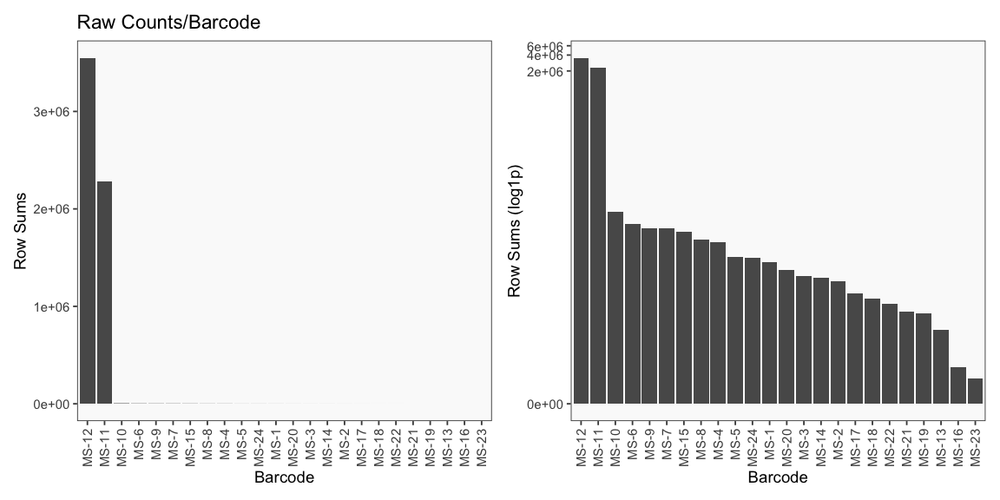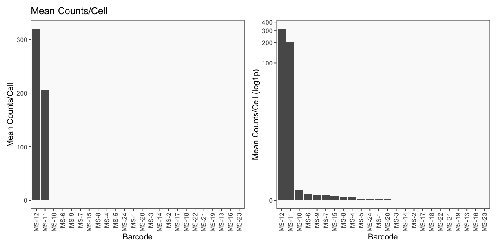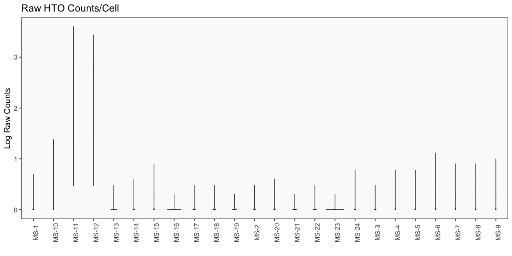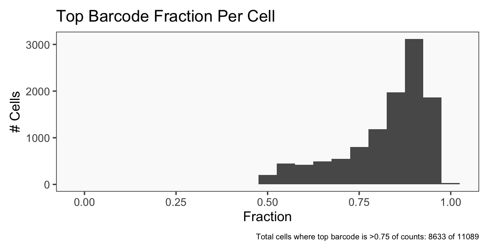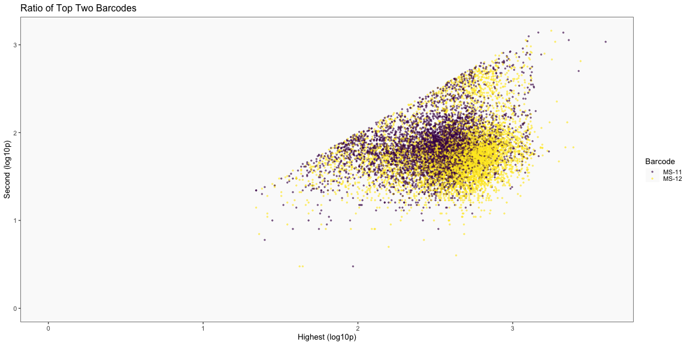
The plots below are generated using the cellhashR command PlotNormalizationQC and are designed to provide visualization of potential normalizations.
PlotNormalizationQC(barcodeData)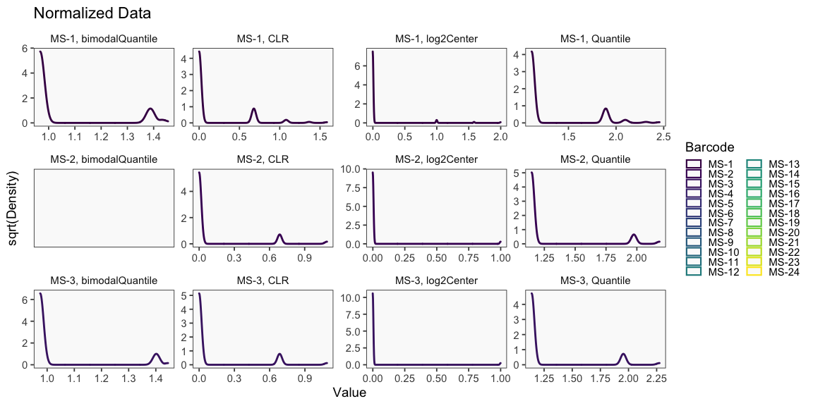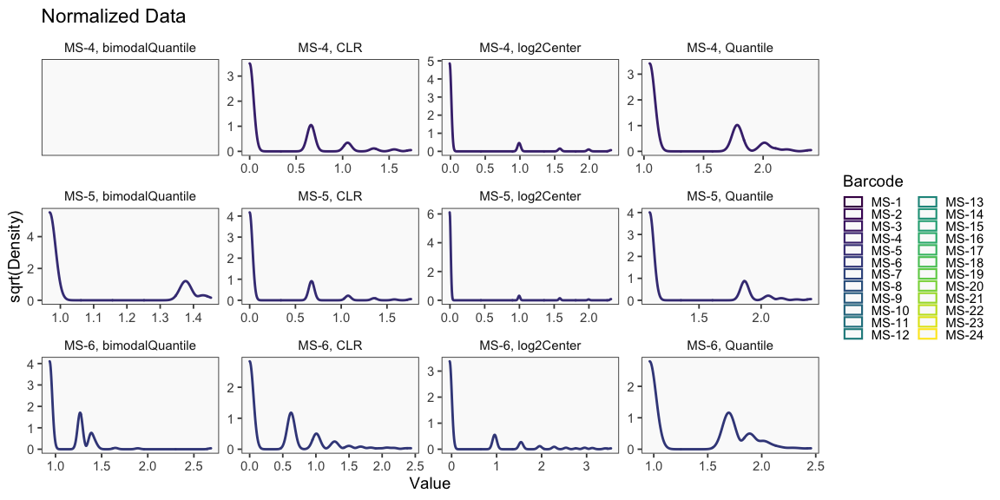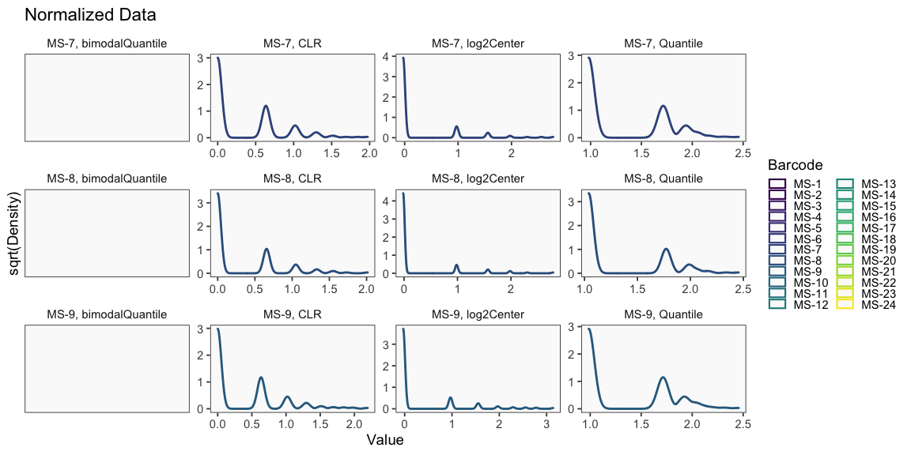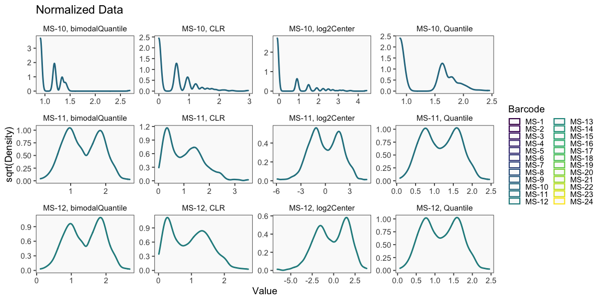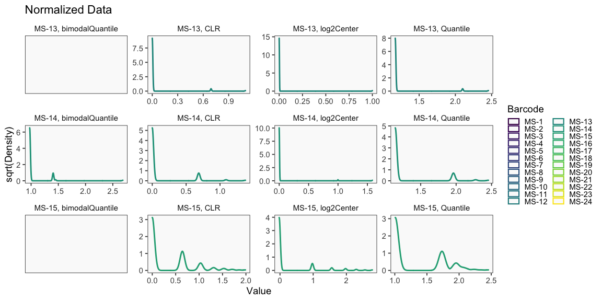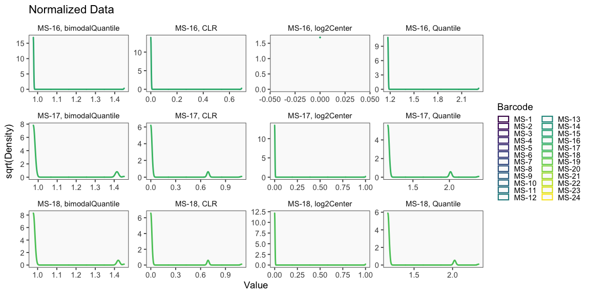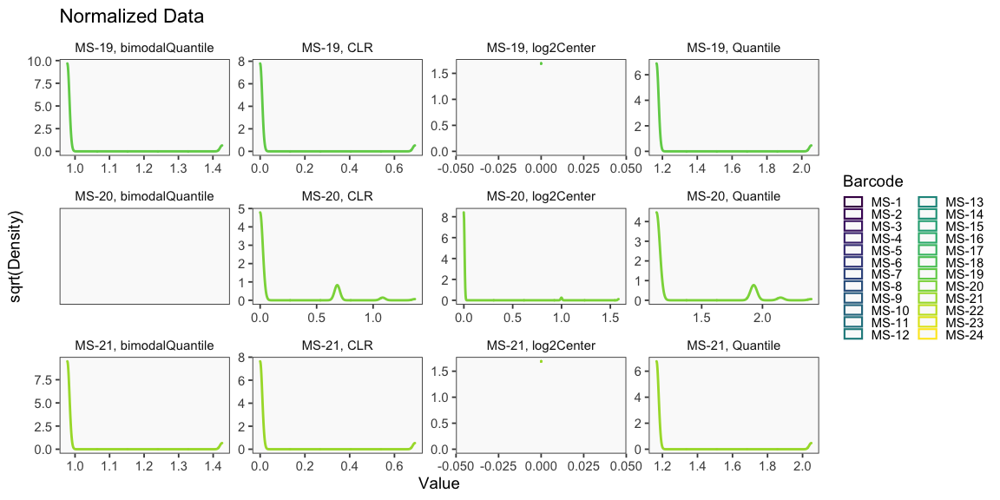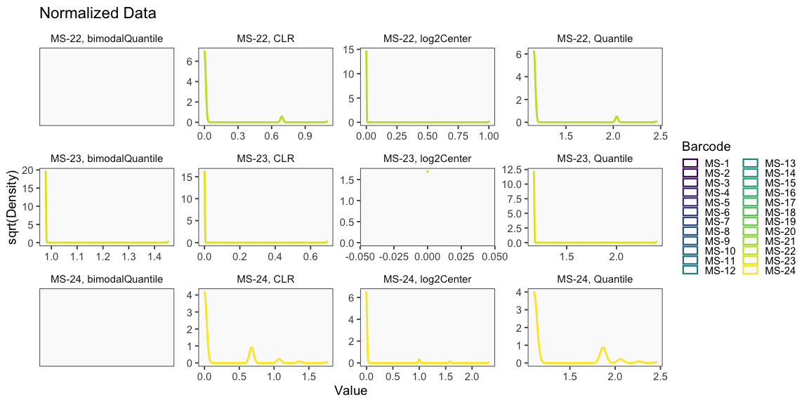